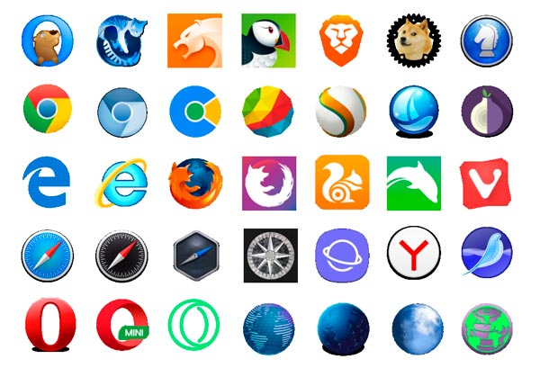

HTML (от англ. HyperText Markup Language — «язык гипертекстовой разметки») — стандартизированный язык разметки веб-страниц во Всемирной паутине. Код HTML интерпретируется браузерами; полученная в результате интерпретации страница отображается на экране монитора компьютера или мобильного устройства.
Общее представление

Язык гипертекстовой разметки HTML был разработан британским учёным Тимом Бернерсом-Ли приблизительно в 1986—1991 годах в стенах ЦЕРНа в Женеве в Швейцарии. HTML создавался как язык для обмена научной и технической документацией, пригодный для использования людьми, не являющимися специалистами в области вёрстки. HTML успешно справлялся с проблемой сложности SGML путём определения небольшого набора структурных и семантических элементов — дескрипторов. Дескрипторы также часто называют «тегами». С помощью HTML можно легко создать относительно простой, но красиво оформленный документ. Помимо упрощения структуры документа, в HTML внесена поддержка гипертекста. Мультимедийные возможности были добавлены позже.Первым общедоступным описанием HTML был документ «Теги HTML», впервые упомянутый в Интернете Тимом Бернерсом-Ли в конце 1991 года. В нём описываются 18 элементов, составляющих первоначальный, относительно простой дизайн HTML. За исключением тега гиперссылки, на них сильно повлиял SGMLguid, внутренний формат документации, основанный на стандартном обобщенном языке разметки (SGML), в CERN. Одиннадцать из этих элементов всё ещё существуют в HTML 4.
Изначально язык HTML был задуман и создан как средство структурирования и форматирования документов без их привязки к средствам воспроизведения (отображения). В идеале, текст с разметкой HTML должен был без стилистических и структурных искажений воспроизводиться на оборудовании с различной технической оснащённостью (цветной экран современного компьютера, монохромный экран органайзера, ограниченный по размерам экран мобильного телефона или устройства и программы голосового воспроизведения текстов).
Браузеры
Текстовые документы, содержащие разметку на языке HTML (такие документы традиционно имеют расширение .html или .htm), обрабатываются специальными приложениями, которые отображают документ в его форматированном виде.Такие приложения, называемые «браузерами» или «интернет-обозревателями» Например:
- Google Chrome
- Mozilla FireFox
- Microsoft Edge
- Opera

Версии
- HTML 2.0 — опубликован IETF как RFC 1866 в статусе Proposed Standard (24 ноября 1995 года);
- HTML 3.0 — 28 марта 1995 года — IETF Internet Draft (до 28 сентября 1995 года);
- HTML 3.2 — 14 января 1997 года;
- HTML 4.0 — 18 декабря 1997 года;
- HTML 4.01 — 24 декабря 1999 года;
- ISO/IEC 15445:2000 (так называемый ISO HTML, основан на HTML 4.01 Strict) — 15 мая 2000 года;
- HTML5 — 28 октября 2014 года
- HTML 5.1 начал разрабатываться 17 декабря 2012 года. Рекомендован к применению с 1 ноября 2016 года;
- HTML 5.2 был представлен 14 декабря 2017 года;
- HTML 5.3 был представлен 24 декабря 2018 года.
Официальной спецификации HTML 1.0 не существует. До 1995 года существовало множество неофициальных стандартов HTML. Чтобы стандартная версия отличалась от них, ей сразу присвоили второй номер.
Версия 3 была предложена Консорциумом Всемирной паутины (W3C) в марте 1995 года и обеспечивала много новых возможностей, таких как создание таблиц, «обтекание» изображений текстом и отображение сложных математических формул, поддержка gif формата. Даже при том, что этот стандарт был совместим со второй версией, реализация его была сложна для браузеров того времени. Версия 3.1 официально никогда не предлагалась, и следующей версией стандарта HTML стала 3.2, в которой были опущены многие нововведения версии 3.0, но добавлены нестандартные элементы, поддерживаемые браузерами Netscape Navigator и Mosaic.
В версии HTML 4.0 произошла некоторая «очистка» стандарта. Многие элементы были отмечены как устаревшие и не рекомендованные (англ. deprecated). В частности, тег <font>, используемый для изменения свойств шрифта, был помечен как устаревший (вместо него рекомендуется использовать таблицы стилей CSS).
В 1998 году Консорциум Всемирной паутины начал работу над новым языком разметки, основанным на HTML 4, но соответствующим синтаксису XML. Впоследствии новый язык получил название XHTML. Первая версия XHTML 1.0 одобрена в качестве Рекомендации консорциума Всемирной паутины 26 января 2000 года.
Планируемая версия XHTML 2.0 должна была разорвать совместимость со старыми версиями HTML и XHTML, но 2 июля 2009 года Консорциум Всемирной паутины объявил, что полномочия рабочей группы XHTML2 истекают в конце 2009 года. Таким образом, была приостановлена вся дальнейшая разработка стандарта XHTML 2.0.